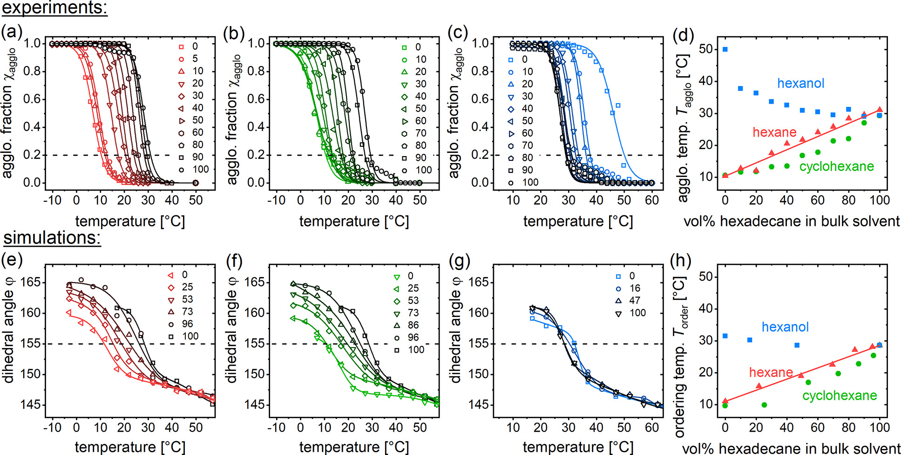
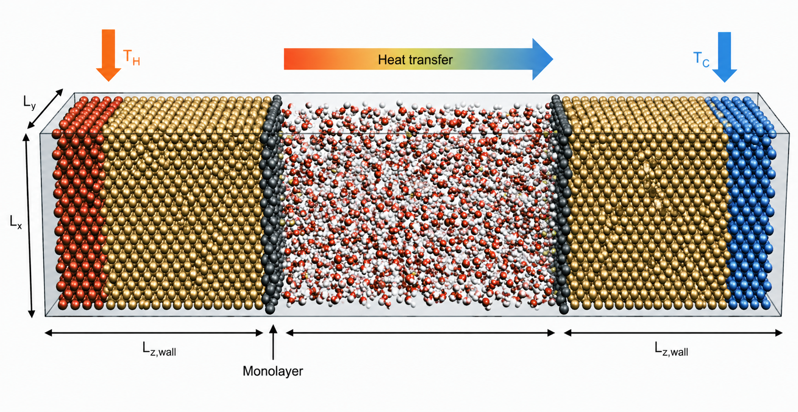
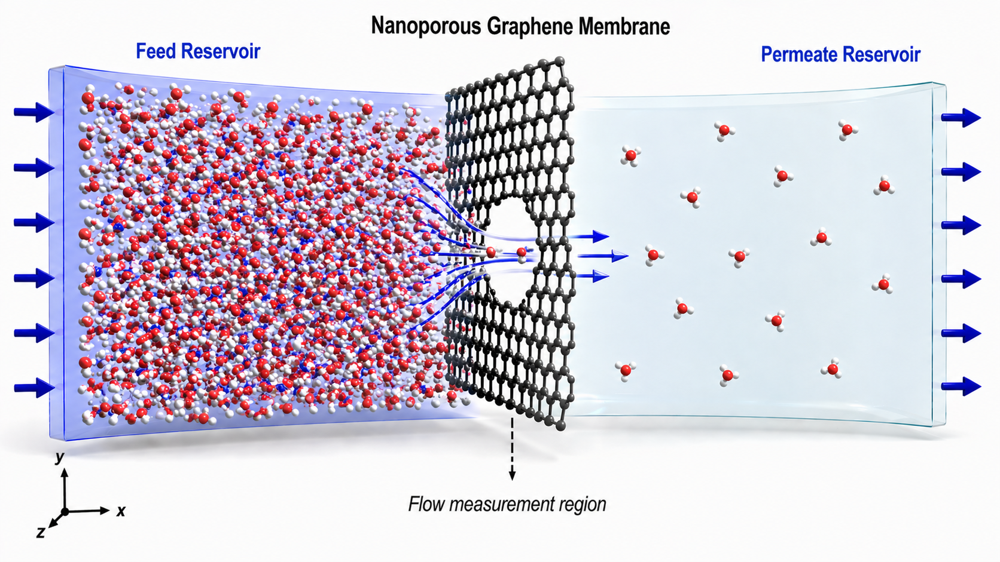
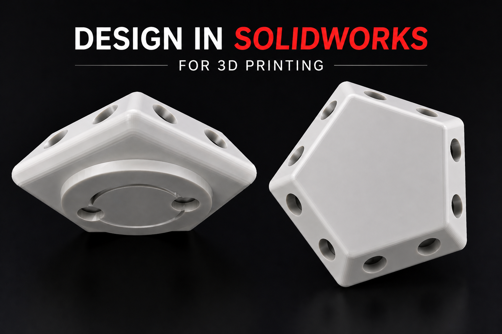
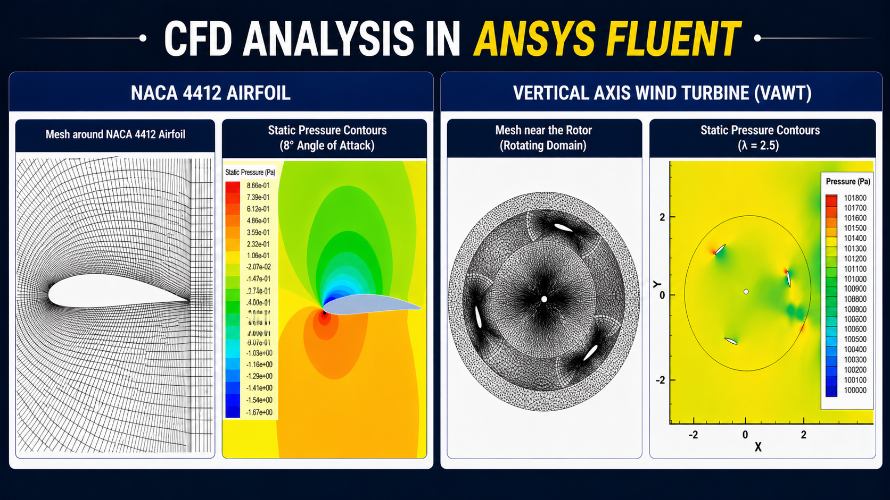

Nanocrystal Film Crystallization and Phase Behavior
Designed computational workflows to investigate the crystallization,
stability, and phase behavior of ordered nanocrystal films.
Built coarse-grained models to understand how surface chemistry and
structural design parameters influence film formation and stability,
mapped kinetic phase diagrams across broad parameter spaces, and
developed free-energy calculation protocols to quantify stability
landscapes and phase transformations in assembled nanocrystal materials.
LAMMPS
Coarse-Grained Modeling
Free Energy
Phase Diagrams
Python
HPC
View project

Nanoparticle Ink Stability and Assembly
Developed molecular dynamics simulation workflows to study the stability,
surface organization, and assembly behavior of nanoparticle ink systems.
Established structure–property relationships linking surface chemistry,
molecular ordering, and solvent environment to dispersion, aggregation,
and formulation behavior, helping explain how nanoscale interactions
shape the performance of nanoparticle inks.
Molecular Dynamics
Nanoparticle Inks
Structure–Property
Python
HPC
View Project #1
View Project #2

Scattering-Guided Structural Analysis of Nanoparticle Dispersions
Interpreted SAXS and SANS scattering profiles and correlated them
with molecular dynamics simulation results to characterize structural
ordering in nanoparticle dispersions.
This work combined computational modeling with experimental scattering
analysis to improve the structural interpretation of complex nanoparticle systems.
SAXS
SANS
Structural Analysis
Python
Data Interpretation
View Project
— Add paper or repository link


Nanoscale Heat and Fluid Transport in Confined Systems
Built and analyzed molecular simulation models to investigate nanoscale
heat and fluid transport in thin-film and membrane-based systems.
Conducted non-equilibrium molecular dynamics simulations to study
thermal transport across interfaces and pressure-driven flow through
graphene nanopores, and evaluated the roles of interfacial interactions
and slip behavior using Fourier’s law, interfacial thermal resistance,
and vibrational density of states analysis.
NEMD
Thermal Transport
Fluid Transport
Graphene Nanopores
Interfacial Analysis
View Project #1
— RSC Advances paper
View Project #2
— Physical Review E paper
Scientific Workflow Automation for Molecular Simulations
Developed Python-based analysis pipelines and automated simulation
workflows to process trajectories, visualize spatial trends through
heat maps, and extract structural and thermodynamic trends from
large simulation datasets.
Applied HPC systems, bash scripting, Python, and R to improve workflow
efficiency and support large-scale simulation and data analysis campaigns.
Python
Bash
R
HPC
Automation
Visualization
Add project link


CAD Modeling and Engineering Visualization
Designed CAD models of nanoparticle structures and vertical-axis wind
turbine concepts to support visualization, design communication,
and engineering interpretation.
For nanoparticle systems, the CAD work supported research demonstrations
and prototype development, including 3D-printed models that helped
communicate structural ideas more effectively. This work also reflects
broader engineering design and visualization experience through CFD
analysis and wind turbine-related modeling.
SolidWorks
CAD Modeling
3D Printing
CFD
Engineering Visualization
View Project #1
— IEEE paper
View Project #2
— IEEE paper
View Project #3
— Airfoil analysis paper
View Project #4
— Design file / report